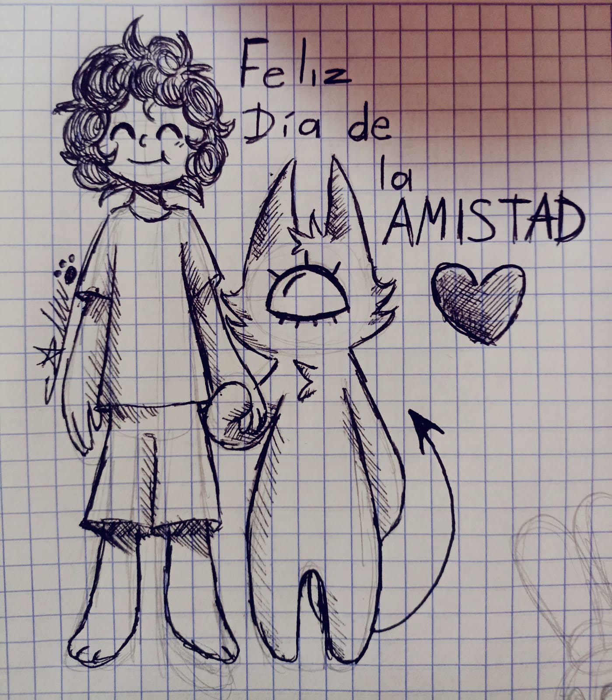

El dibujo que me regalaste 🎨
A mi hermanita, la que también nos salvó sin saberlo
Gaby, mi Gaby:
No sé bien por dónde empezar, porque cuando se trata de vos, las palabras se me mezclan entre la admiración, el orgullo y un cariño tan grande que a veces no me cabe en el pecho.
Hoy quiero escribirte no como el novio de Zoi, ni como un amigo más. Quiero escribirte como tu hermano. El que te ha visto caer, levantarte, llorar y sonreír… y en cada una de esas veces, solo pudo pensar: "Qué afortunado soy de tenerla en mi vida".
Vos y yo sabemos que la vida no ha sido fácil con vos. Has cargado cosas que nadie debería cargar, has atravesado tormentas que habrían roto a cualquiera. Y aún así, seguís acá, firme, con esa luz que no se apaga por más que intenten apagarla.
Zoi y yo lo vemos. Lo admiramos. Y sobre todo, lo abrazamos con todo el amor que tenemos para darte.
Gracias por permitirme ser parte de tu mundo. Gracias por confiar, por reír, por llorar frente a mí sin miedo. Gracias por ser esa hermana que no solo recibe amor, sino que lo devuelve multiplicado, con esa forma tuya tan única de querer.
No sé si te das cuenta, Gaby, pero vos también nos salvaste. En tus momentos difíciles, cuando te abrazamos, también nos abrazamos un poco a nosotros mismos. En tu fortaleza, encontramos la nuestra. Y en tu sonrisa, recordamos por qué vale la pena seguir.
Hoy no es una fecha especial. Pero para mí, cualquier día es especial si lo comparto con vos. Porque tener una hermana como vos no es algo que pase todos los días.
Siempre voy a estar acá, Gaby. Para lo que necesites, para lo que calles, para lo que sueñes. Como hermano, como amigo, como familia.
Te quiero. Te quiero mucho. Y no es para tanto… es para siempre.
Diego